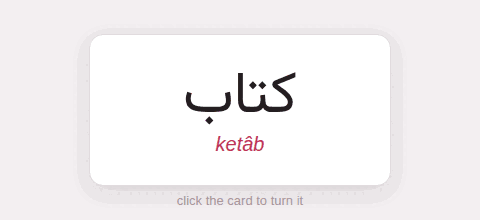
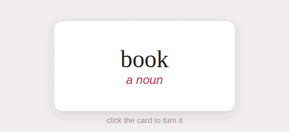

The showcase
One of everything a page of the guide can hold
Persian is the page’s target language; the Japanese and English exercises are examples with their own.
This page is a test as much as a page: it holds one of everything the guide draws, so that a change to the engine, or to the studio behind it, shows here first. Its target language is Persian, the studio’s default; Writing this guide says how each piece is written.
1. Text#
Prose in the page’s language, with a Persian word in it, کتاب, found and set right to left on its own, and a marked stretch, with a PDF in it. Bold, italic, italic again, struck, code [x]{tl}, a link to a page, a link to a site, and a note.1A footnote, written in place.
من کتاب را خواندم، و بعد به خانه رفتم.
تو را من چشم در راهم
شباهنگام
تند fast, آهسته slow, کتاب = book; ❌کتابا is wrong, ✅ کتابها is right; here → there.
A lemma heading: the headword, its transliteration, its etymology.
2. Blocks#
A box. It holds anything: a list,
- خانه = house
- آب = water
and a formula, e^{i\pi} + 1 = 0.
| Word | Transliteration | Meaning |
|---|---|---|
| کتاب | ketâb | book |
| خانه | xâne | house |
| آب | âb | water |
- Nouns
- name things.
- Verbs
- say what they do.
- First
- Second
- nested
- and nested again
- nested
- a task done
- a task to do
- Glossary
- A table of the glosses in a document.
3. Pictures, sound, video#
A GIF inside a sentence

and a figure laid out the studio’s way:

The back of a card, as a Hugo figure.
More, folded away
Inside a details block: کتاب, a list,
- one
- two
4. Code#
def gloss(word, meaning): return f"{word} = *{meaning}*"The word [کتاب]{teal} = *book*.The word کتاب = book.
5. Exercises in Persian#
6. Exercises in Japanese#
target: ja[猫]{kana:ねこ translit:neko} = *cat*, [犬]{kana:いぬ translit:inu} = *dog*.:::exercise flashcardtarget: 猫reading: ねこtransliteration: nekomeaning: cat::::::exercise choose-allprompt: Which of these are animals?- [x] [猫]{tl}- [x] [犬]{tl}- [ ] [本]{tl}::::::exercise order-sentencesprompt: Put the lines in order.- [1] [春はあけぼの。]{tl}- [2] [夏は夜。]{tl}- [3] [秋は夕暮れ。]{tl}:::猫 = cat, 犬 = dog.
7. Exercises in English#
target: en:::exercise true-false- [London]{tl} is the capital of England => true- [Paris]{tl} is the capital of Spain => false::::::exercise odd-one-outprompt: Which one is not a colour?- [ ] [red]{tl}- [ ] [green]{tl}- [x] [table]{tl}::::::exercise match-opposites- [hot]{tl} => cold- [up]{tl} => down- [early]{tl} => late:::Notes
- A footnote, written in place.